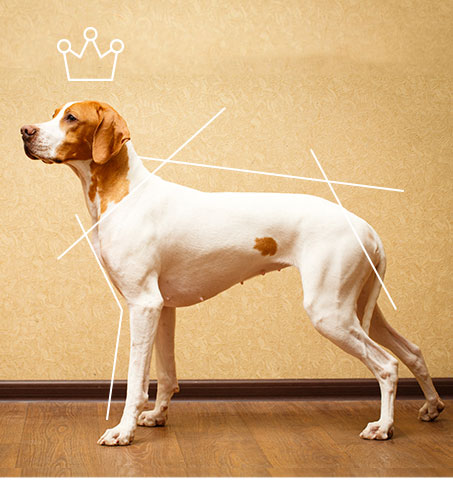
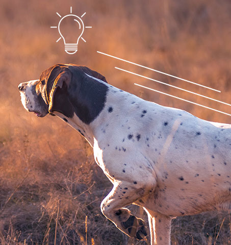
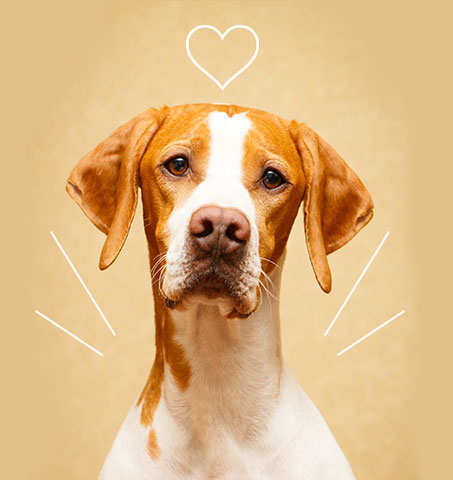

HERITAGE British Style, For your Urban Life
ICONIC DOG,
ENGLISH POINTER
ENGLISH POINTER
헤지스의 상징인 잉글리시 포인터는 영국의 귀족들이 사냥을 나설 때에 늘 동행하던 사냥견이다.
영국의 명문가인 에드워드 가문의 문장에 새겨져 있을 정도로 영국인들에게는 더할 나위 없는 친구이자 동반자였다.
잉글리시 포인터의 이름은 사냥감을 발견했을 때 목표물을 향해 한 발을 들어 방향을 가리키며 포인팅하는 습성에서 유래했다.
머리를 곧게 세우고 우아한 아치형 라인에 곧게 뻗은 다리를 형상화한 ‘h’는 헤지스의 상징으로써 다양하게 재해석 되어 왔다.
-
SLENDER GRACE 우아한 품위견친근한 의리견사냥에 있어서는 거침 없고 대담하지만, 평소의 잉글리시 포인터는 밝고 명랑하다. 그는 긴 다리로 만들어내는 큰 보폭만큼이나 자신을 둘러싼 모든 것들을 사랑한다. 사람을 잘 따르고 애정이 많아서 사람들과 긴밀한 교감을 나누며, 사랑하는 사람에게 누구보다 따뜻한 잉글리시 포인터는 헤지스를 즐겨 입는 고객의 모습과 많이 닮아 있다. 의리견인 잉글리시 포인터가 제 2차 세계 대전에서 해군을 도와 공을 세우고 포로로 잡힌 전우들을 돌 본 일화는 유명하다.
-
CLEVER HUNTER 친근한 의리견친근한 의리견사냥에 있어서는 거침 없고 대담하지만, 평소의 잉글리시 포인터는 밝고 명랑하다. 그는 긴 다리로 만들어내는 큰 보폭만큼이나 자신을 둘러싼 모든 것들을 사랑한다. 사람을 잘 따르고 애정이 많아서 사람들과 긴밀한 교감을 나누며, 사랑하는 사람에게 누구보다 따뜻한 잉글리시 포인터는 헤지스를 즐겨 입는 고객의 모습과 많이 닮아 있다. 의리견인 잉글리시 포인터가 제 2차 세계 대전에서 해군을 도와 공을 세우고 포로로 잡힌 전우들을 돌 본 일화는 유명하다.
-
FRIENDLY COMPANION 우아한 품위견총명한 사냥견사냥감의 위치를 파악하기 위해 뛰어다녔던 그의 몸은 탄탄하게 자리잡은 근육에 반전되는 우아한 아치형 라인을 가졌다. 목표물을 향해 치켜든 얼굴과 땅을 향해 곧게 뻗은 다리는 다른 개에서는 찾아볼 수 없는 품위를 지녔다. 잉글리시 포인터만의 기품 있는 외모와 절제된 행동은 클래식한 스타일에 세련된 모던함을 추구하는 헤지스와 닮아있다.